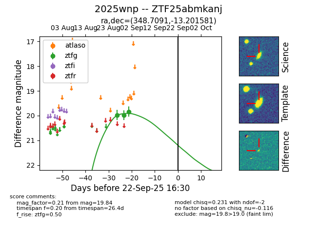
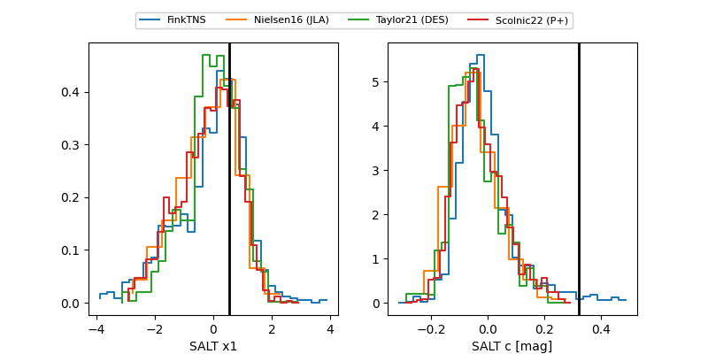

FINK: ZTF25abmkanj
Lasair: ZTF25abmkanj
ALeRCE: ZTF25abmkanj
TNS: 2025wnp
YSE: 2025wnp
ZTF25abmkanj (ztf,fink)
2025wnp (tns,yse)
equatorial (ra, dec) = (348.7091,-13.20158)
galactic (l, b) = (59.8028,-63.47850)


last ztfg=19.84
3 ztfg detections